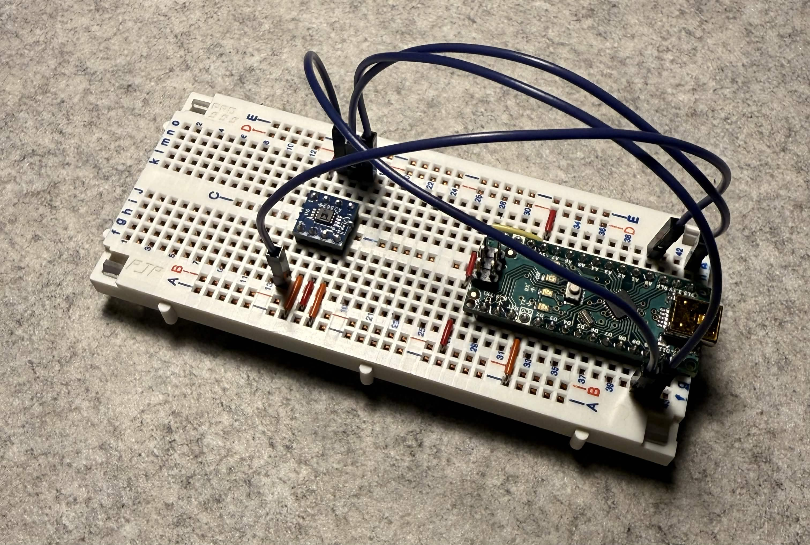
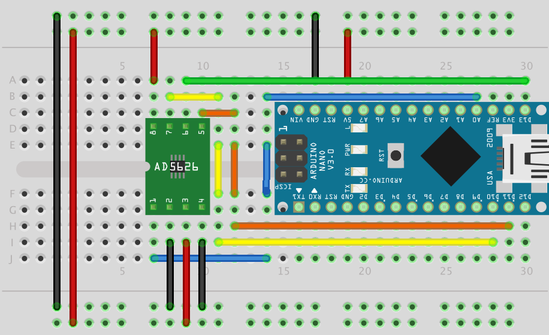

$ cat ./tutoriels/dac_externe.md
Tutoriel DAC Externe
Un DAC, ou Digital-to-Analog Converter, permet de transformer une donnée numérique en une valeur analogique. Dans cet article, nous allons brièvement explorer l'utilisation d'un AD5626, qui est un DAC de 12 bits fonctionnant en SPI avec un Arduino Nano.

Le matériel utilisé
- Arduino Nano
- AD5626
- Fils de connexion
Schéma

Programme
#include "AD5626.h"
// On crée l'objet DAC sur la broche 10
AD5626 monDAC(10);
// Prototype de la fonction de conversion
float readTension(int pin);
void setup() {
monDAC.begin();
Serial.begin(9600);
}
void loop() {
monDAC.setValue(1000); // On demande une sortie de 1000 mV
Serial.print("Valeur:"); // On affiche la valeur
Serial.println(readTension(A0));
delay(2000); // On fait un délai
monDAC.setValue(2000); // On demande une sortie de 2000 mV
Serial.print("Valeur:");
Serial.println(readTension(A0));
delay(2000);
monDAC.setValue(4000); // On demande une sortie de 4000 mV
Serial.print("Valeur:");
Serial.println(readTension(A0));
delay(2000);
}
// Fonction de conversion
float readTension(int pin) {
int valeurBrute = analogRead(pin);
float tension = valeurBrute * (5.0 / 1024.0);
return tension;
}En savoir plus
Afin d'en apprendre plus sur les DAC, nous vous invitons à lire notre documentation disponible dans la formation Arduino de niveau II.